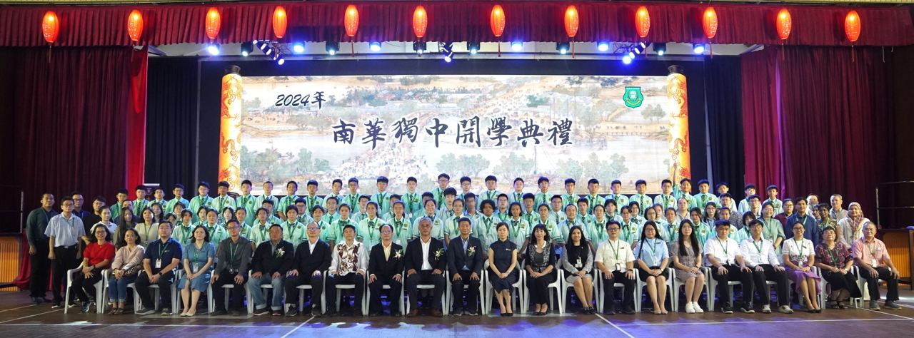
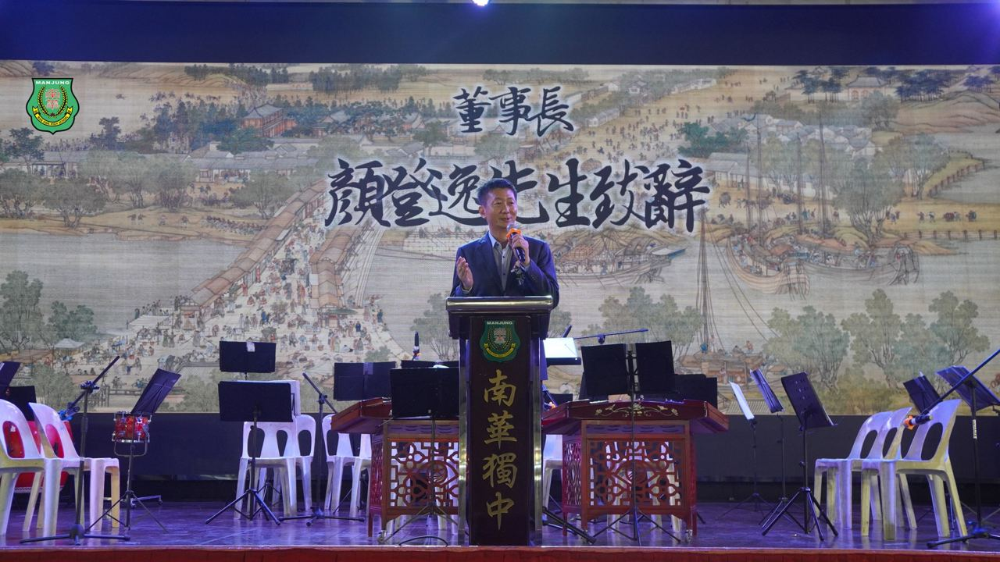
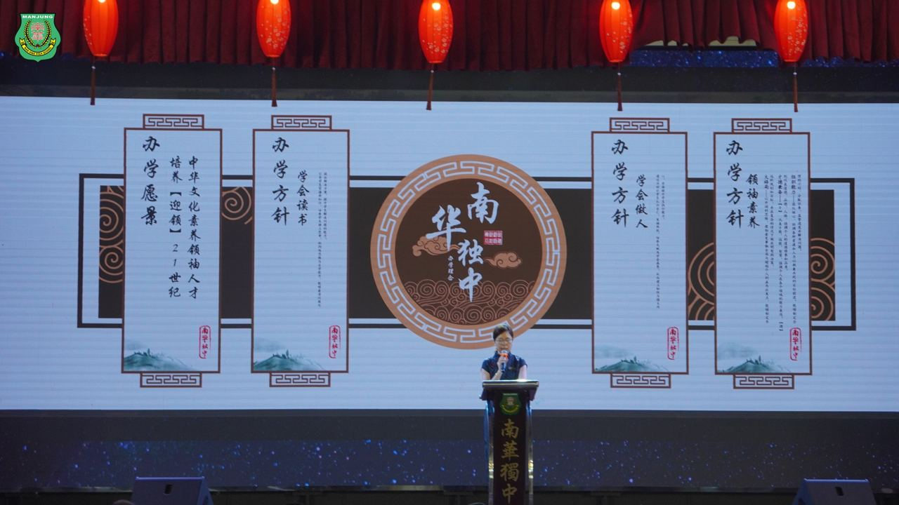
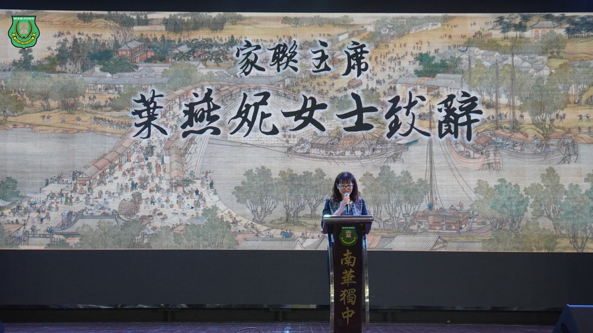
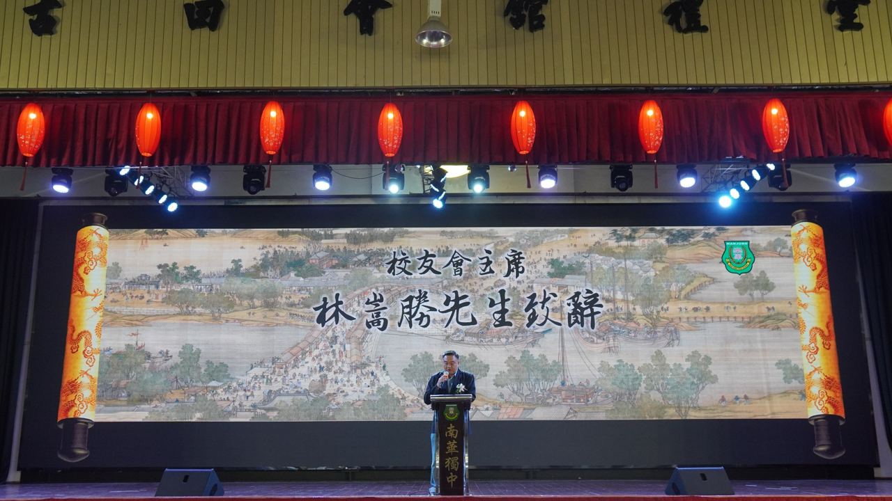
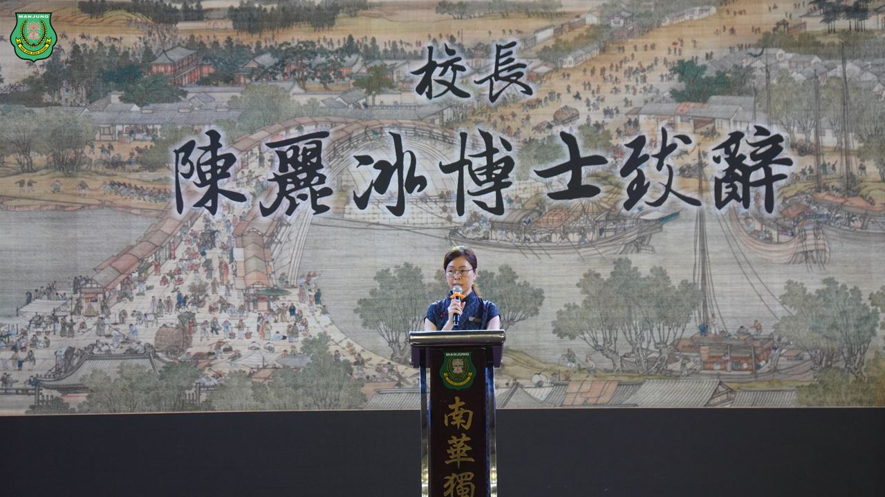
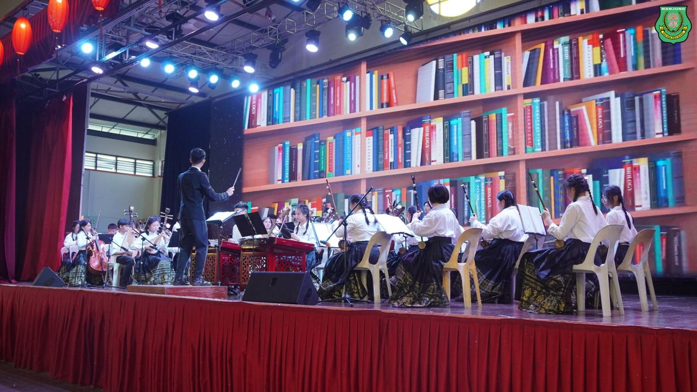
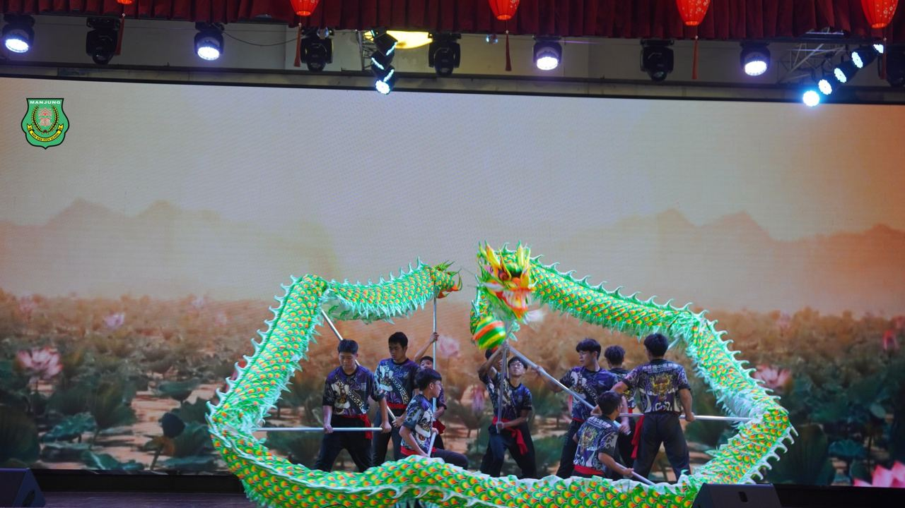

南华独中2024年开学典礼
南华独中2024年开学典礼
喜迎84新生加入南华大家庭
开学典礼标志着新学年的开始，也为校园注入满满的动力与期待。日前曼绒南华独中董家教师生聚集一堂，以庄重仪式及精彩纷呈的文艺表演喜迎84位新生与插班生加入南华独中大家庭，展现校园丰富多彩的文化底蕴与热情。此外也安排了嘉宾与师生向“南华独中之父”丹斯里颜清文铜像献花仪式，感恩先贤为华教无私奉献的精神。
在开学典礼上，新生迈着神采奕奕、精神焕发的步伐上台，在董事会、家长联谊会、校友会三机构及校方的见证下，领过学号，正式成为南华一份子。
董事长颜登逸在致辞语重心长地告诫新生未来科技的发展必然与人工智能紧密关联，学生要时刻保持大格局、与时并进的国际视野，除了在校求学期间掌握基本学习知识，更要借由学校开设的校本与技职课程掌握跨领域解决问题的能力，以适应社会的变迁，不被社会所淘汰。
校长陈丽冰博士在致辞中以南华独中的校训““明德·格物·致知·笃行”勉励与欢迎新生，并进一步说明“明德，是做人的根本；格物，是探索的过程；致知，是求学的目标；笃行，是为人处事的准则。”陈校长恳望孩子们都能牢记这句校训，努力践行其中的精神，成为品德高尚、学识渊博、行为端正之人，祝愿每个孩子心中学习的种子都能绽放出美丽的花朵！
家长联谊会主席叶燕妮女士以“家长们将继续全力支持学校的教育事业，与各位携手合作，共同为孩子们创造更好的学习环境和成长空间”为全校注入信心。叶女士表示在新的学年里，大家应该要怀着无限的希望和期待，迎来学校新的起点。
校友会主席林嵩胜先生在致辞中，勉励学生“是自己人生的驾驶员，找好方向，勇往前行，才能顺利抵达成功的终点。”。林主席更是耳提面命，提醒学生未来是强调个性、多元、丰富等综合素质的社会，所以学习期间不忘构筑自身的硬核能力，早日找寻到自身的使命感。
南华独中借着开学典礼这正式的场合，颁发第48届全国独中统一考试优异成绩奖予陈念慈同学以示奖励。
出席开学典礼的嘉宾包括有董事长颜登逸先生、董事总务何添胜先生、董事副总务拿督黄思贤、董事副总务林道祥、董事叶绍龙、家联主席叶燕妮女士、校友会主席林嵩胜先生。
#开学典礼 #新生 #丹斯里颜清文 #献花仪式
#南华独中 #曼绒 #实兆远







